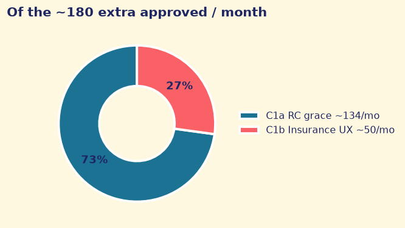
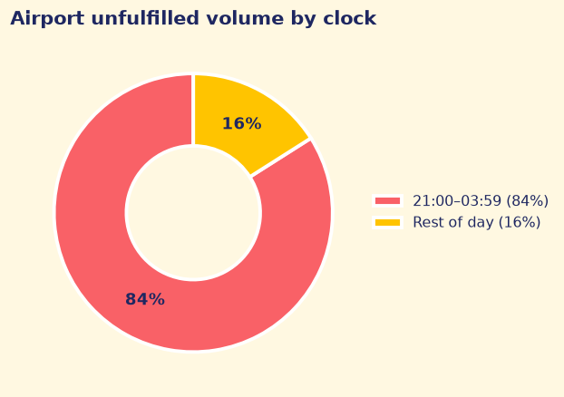
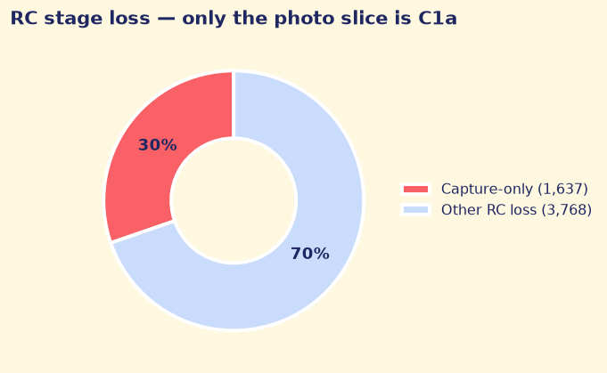
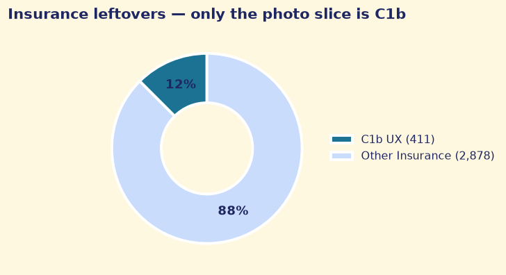
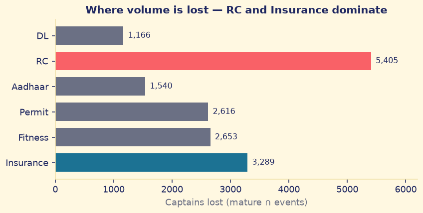

Ramanathan K R · 10 Sep 2026 · extract 30 Jun 2026, 23:59 IST


| # | Do this | Impact | Cost / risk | Watch |
|---|---|---|---|---|
| 1 | C1b this week — Insurance camera (411). Then C1a after Legal: 10-day in-person RC (1,637). Same camera on other docs is a free rider — not in the 180. | ~180/mo (~50 + ~134). Disjoint. | C1b: engineering. C1a: Legal/T&S + ~1 FTE ₹40–60k (assumed). | Approved by cohort |
| 2 | Airport Return Assurance at ₹35.4 per unpaid night-suburban leg. Do not hire near the airport. | Rest-suburban economics. Sample ~₹69–103k/mo. | Trips file is sampled. Not city-core. | Return in 20m, cancels, falling 4-week run-rate |
| 3 | Kill the 5× WhatsApp. Send vs no-send on RC-cleared app/paid captains only. | Cost avoided + answer in 4–6 weeks | Near zero | Aadhaar pass and approved |
Airport, plainly. ~40% unfulfilled at terminals vs ~3% elsewhere. 84% of that pain is 21:00–03:59 (~13 captains vs ~37 by day). Suburban backhaul and overnight return-collapse compound. Mix does not shift after dark (χ² p=0.12). New hires inherit both penalties. Price the deadhead.
CAMP_WA_002 is 0 pp. Clicked vs not (delivered): −1.5pp (CI −3.6 to +0.6). The 29% vs 11% recipient gap is targeting after RC, not lift. Do not fund 5×.
RC and Insurance fail as photographs. RC loses 5,405; only 1,637 are blur / OCR / illegible.



Retry pass rates rise (65% → 74%). RC is vehicle identity, so a 10-day grace is scoped. Insurance loses 3,289 but ~2,530 never uploaded after Fitness; C1b is the 411 photo fails and cannot defer. DL cannot be deferred. Aadhaar / Permit / Fitness are mostly never-upload or eligibility. Rejected 409 already cleared docs — a gate.
| Fix | Flow | Maths | Bank |
|---|---|---|---|
| C1a RC grace | ~300/mo capture-only | × 60% show-up × 74% pass | ~134/mo |
| C1b Insurance UX | 411 capture-only | 67→76% × 91% approved-if-cleared | ~46–52/mo |
Show-up unobserved (40–80% → ~89–188). If Legal will not treat deferred RC as activation, C1a shrinks toward ~36/month.
ARA. Gap ₹31.6 (₹24.9 vs ₹56.5) ÷ 0.8931 eligible share ≈ ₹35.4/leg. 80/100/120% → ~₹69–103k sample. 30% of fare (₹105) overpays.
Not banked. Other-doc camera after C1b — measure, not +180. Never-upload is an assist RCT, not WhatsApp. Field 128–256 overlaps 726 C1a captains — do not add.
Assumptions that would change the answer. 15.6-day cutoff; doc_events not docs_cleared; field gap not banked; ARA vs rest-suburban not city-core; re-derive ₹35.4 if night returns rise; C1a FTE ₹40–60k assumed. No CAC. Trips file sampled. signup_zone_id does not join airport zones.